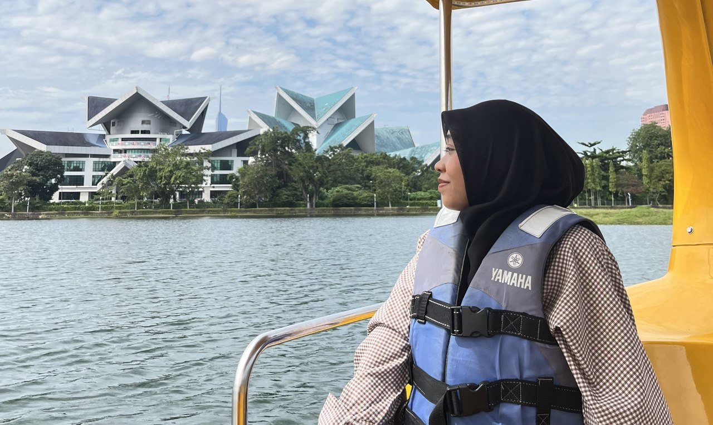
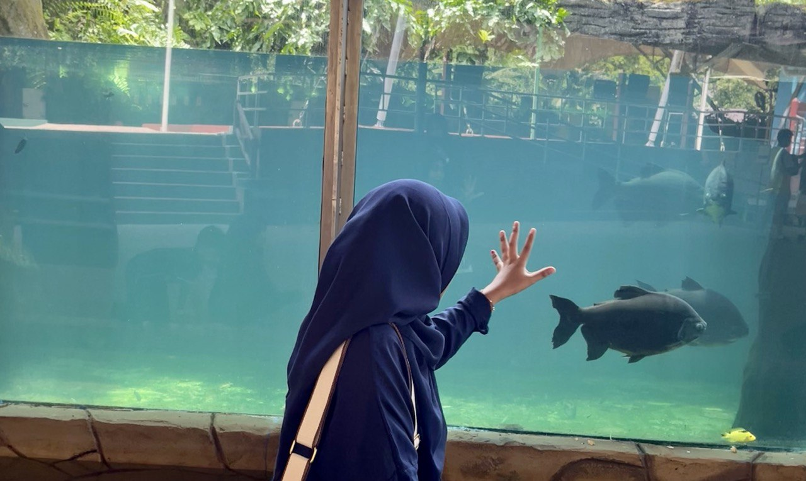
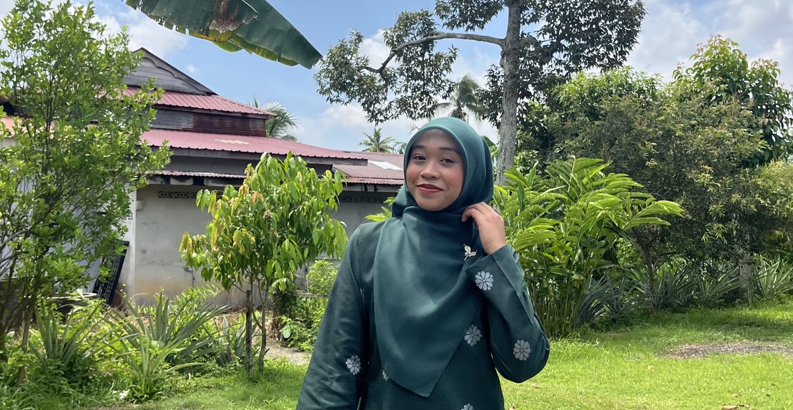
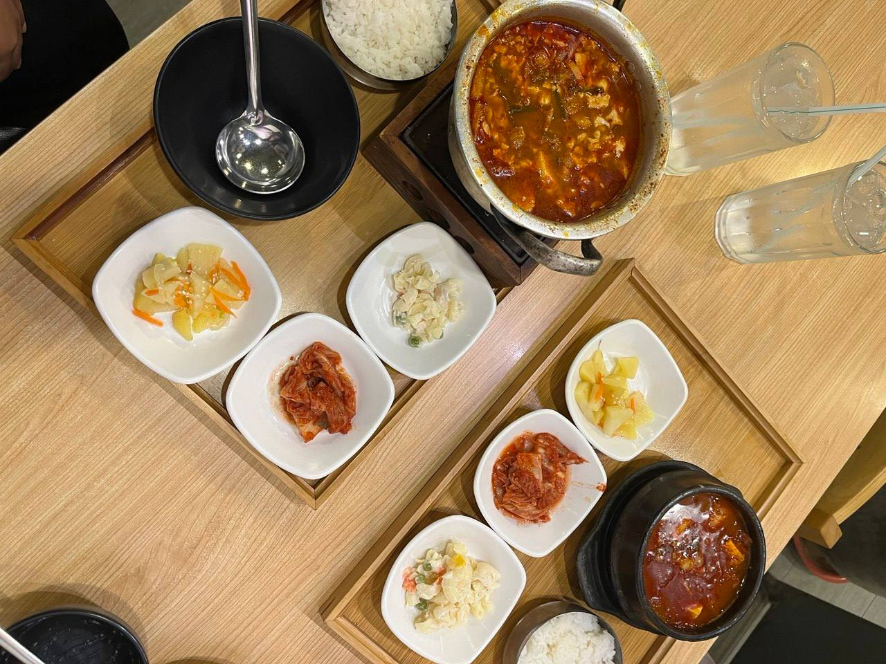
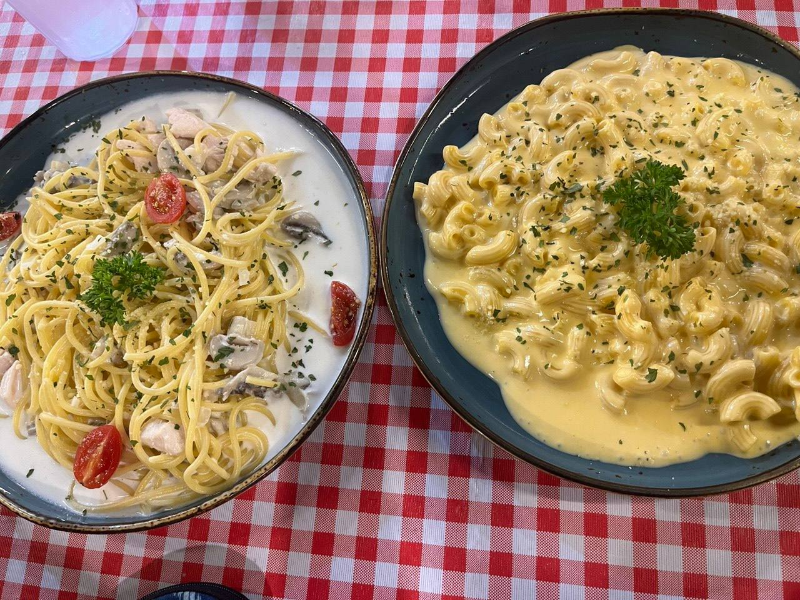
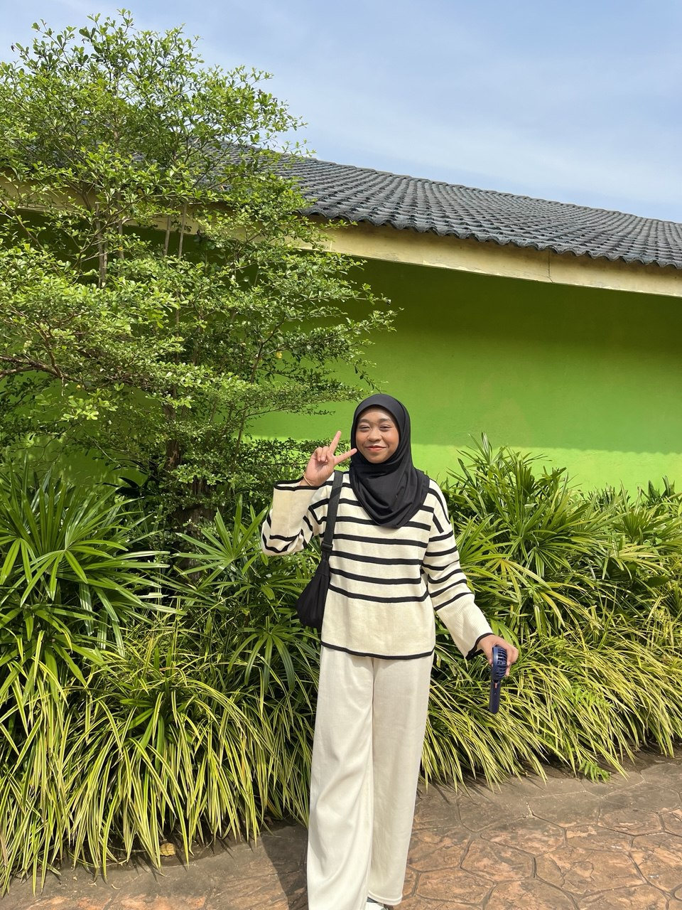

I am a friendly, hardworking and independent person who enjoys learning new things and improving myself every day. My favourite colour is pastel green because it gives a calm and soft feeling.
I also enjoy sleeping on the sofa because it feels comfortable and relaxing after a long day.



I also love capturing pictures of the sky and beautiful sceneries whenever I go out. The colours of the sky, especially during sunset always make me feel calm and inspired.
Taking photos allows me to appreciate the little moments in life.
I am the type of person who prefers to wait for time to determine how things go, especially when it comes to feelings or personal matters.
I am also a bit shy, but I try my best to be confident in front of others. I enjoy meeting new people and learning from different experiences, as they help me grow both personally and academically.
I like to express myself through creative activities and exploring new ideas.
I really enjoy eating and trying different kinds of food, and honestly, I can eat anytime!
Exploring new flavours and enjoying meals is one of the simple pleasures that always makes me happy.
Eating gives me comfort and joy, and it’s a small way I enjoy life every day.
I especially love Korean food, desserts, ice cream and cakes, as they are some of my favourite treats to enjoy anytime.



I am also really fascinated by crocodiles and love watching how they live in their natural habitats.
I have a small collection of crocodile-themed items, including a crocodile phone case, plushies, keychains and more, which makes my interest even more fun and personal.
Crocodiles’ strength and unique behaviours always capture my attention and inspire my curiosity.
I even visited the Crocodile Park in Melaka to see all the different types of crocodiles up close.
I really enjoy watching Korean dramas and love exploring all kinds of genres, including thriller, psychological, romance and comedy.
I find it exciting to follow the different storylines, characters and plot twists, and each drama gives me a chance to experience a wide range of emotions.
Watching K-dramas also inspires me creatively and lets me relax while learning about Korean culture.